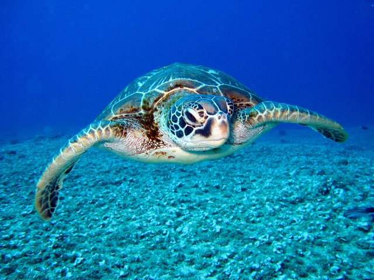

Birdwatching in the Outer Banks
The Outer Banks is a birdwatcher's paradise. Spot various migratory species and native birds throughout the region, including:
- Piping Plover: A small, endangered shorebird often found nesting along the sandy beaches of the Outer Banks.
- Great Blue Heron: Known for its striking appearance and large size, the Great Blue Heron can be seen wading in the shallow waters near marshes and estuaries.
- Osprey: A bird of prey frequently spotted along the coast, often diving into the water to catch fish.
- Tundra Swan: These majestic birds migrate to the area during the winter months, often found in the coastal ponds and sound waters.
- Brown Pelican: Easily recognizable, Brown Pelicans are often seen gliding just above the waves or diving for fish along the shoreline.
Marine Life

Explore the waters to see dolphins, sea turtles, and a variety of fish species that thrive in the rich marine ecosystem.